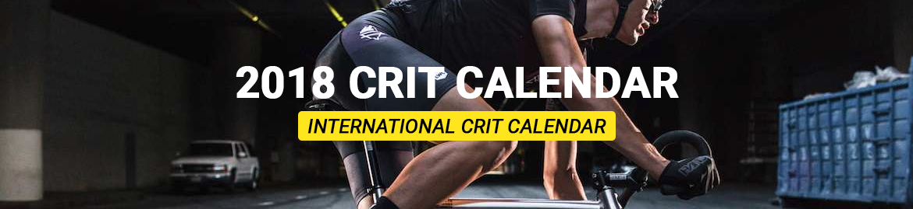

All 2018 Crits in one overview
There are multiple crits happening from February till September 2018. Here is a big overview of everything you wanna know!
| Date | Event Name | City | Country | Event page |
|---|---|---|---|---|
| 25 February | EL DIABLO CRIT SERIES | El Paso,TX | America | |
| 28 February | Lambro Crit – Via Dalla Strada | Milano | Italy | Link |
| 4th of March | Taipei Riverside Crit | Tapei | Taiwan | Link |
| 17 March | PMG Italian Fixed Club | Montecatini | Italy | Link |
| 17 March | Switch Yard Crit | Dallas,TX | America | Link |
| 24 March | Rad Race Last Man Standing | Berlin | Germany | Link |
| 25 March | Lexington Fixed Crit | Lexington, KY | America | Link |
| 1 April | CPS Criterium Projects 2018:Stage 1 | Bangkok | Thailand | Link |
| 7 April | NL Crit Series Rijswijk | Rijswijk | The Netherlands | Link |
| 14 April | PMG Italian Fixed Cup: Lambro Crit | Milan | Italy | Link |
| 14 April | 8Bar Crit 2018 | Berlin | Germany | Link |
| 21 April | NL Crit Series – Made Crit | Near Breda | The Netherlands | Link |
| 22 April | Fixed Rennen Scanhaus Cup | Marlow | Germany | Link |
| 21 April | Mission Crit | San Francisco | America | Link |
| 21-22 April | Les Boucles d’Or | Lyon | France | Link |
| 28 April | Red Hook Criterium – Brooklyn | New York | America | Link |
| 19 May | Project Fixed – Ravens Criterium | Ravenna | Italy | Link |
| 19/20 May | 1896 CMRR IV: Mani Invitational | Kardamyli | Greece | Link |
| 20 May | Sfidare Crit | Kaizu | Japan | Link |
| 26 May | NL Crit Series – Katendrecht | Rotterdam | The Netherlands | Link |
| 26 May | PMG Italian Fixed Cup: Fiorino Crit | Firenze | Italy | Link |
| 26 May | Grizzly Crit | Leipzig | Germany | Link |
| 2 June | Thundercrit | London | United Kingdom | Link |
| 2 June | NL Crit Series – Hammer Crit | Sittard | The Netherlands | Link |
| 9 June | Waterkant Krit | Hamburg | Germany | Link |
| 17 June | HannoverFXD Crit | Hannover | Germany | Link |
| 23 June | Project Fixed – Rosti Criterium | Crespi D’adda | Italy | Link |
| 23-24 June | NL Crit Series – Haarlem | Haarlem | The Netherlands | Link |
| 1st July | NL Crit Series – Kralingen | Rotterdam | The Netherlands | Link |
| 7th July | National Moutarde Crit | Dijon | France | Link |
| 7th July | Project Fixed – God Save the Cyclist | Torino | Italy | Link |
| 28th July | Project Fixed – Ursus Criterium | Trieste | Italy | Link |
| 6 August | NL Crit Series – Draai van de Kaai | Roosendaal | The Netherlands | Link |
| 19 August | NL Crit Series – Zwanenburg | Near Amsterdam | The Netherlands | Link |
| 25 August | SBSB Crit | Berlin | Germany | Link |
| 8 September | PMG Italian Fixed Cup: Coppa Agostoni | Lissone | Italy | Link |
| 8 September | NL Crit Series – Amsterdam Ortelius Crit | Amsterdam | The Netherlands | Link |
| 15 September | Criterium dei Ponti – V | Milan | Italy | Link |
| 22 September | Brussels City Crit | Brussels | Belgium | Link |
| 23 September | Ullmax Radsporttage Fixed Crit | Loitz | Germany | Link |
| 29 September | NL Crit Series – Final Crit | TBA | The Netherlands | Link |